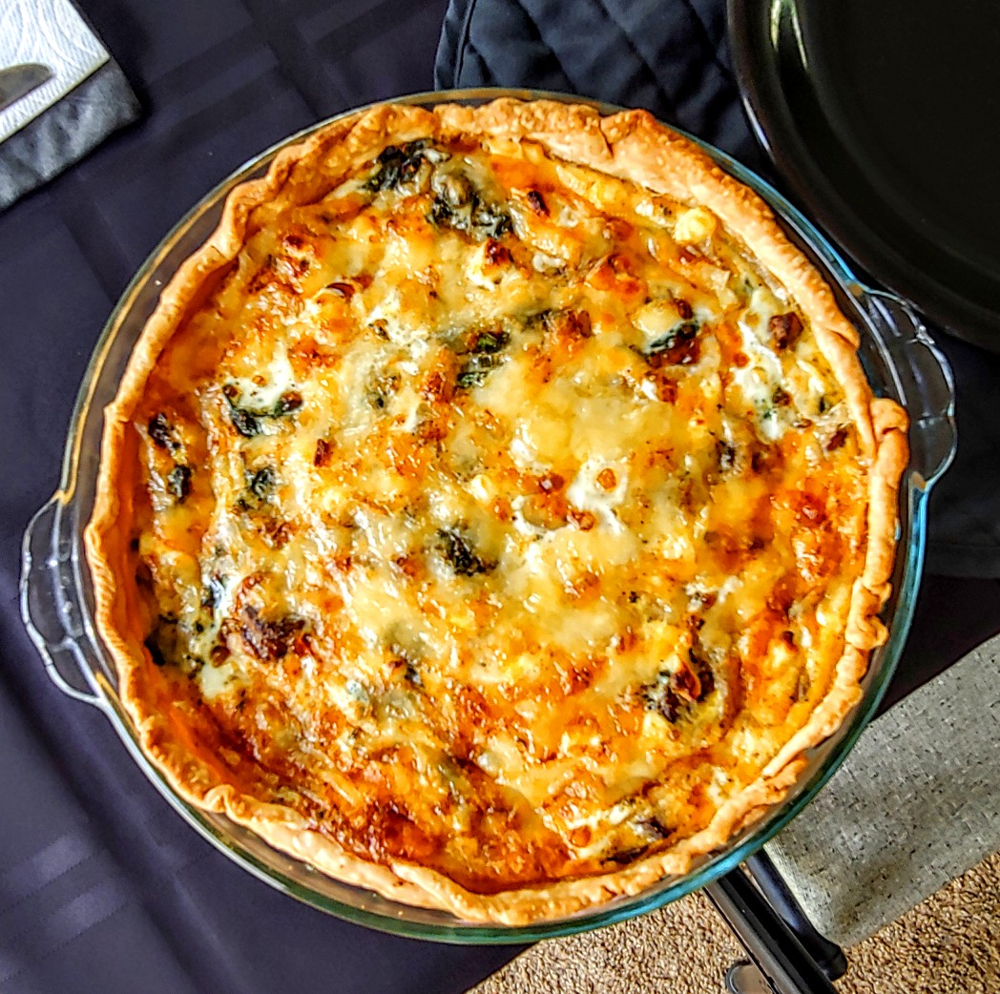

Transformed Spinach Mushroom Quiche

Description
This moist vegetarian quiche is perfect for every meal.
The quiche was originally a quiche Lorraine, but has since been transformed.
Feel free to add sausage if you choose.
I usually make 2 large pies or several small ones all at one time, freezing whatever is left over.
Ingredients
- 1 prepared 9-inch single pie crust
- 4 eggs
- ¾ cup milk
- 1 tablespoon chopped fresh parsley
- 1 teaspoon minced garlic
- ½ teaspoon salt
- ½ teaspoon ground black pepper
- ⅛ teaspoon ground nutmeg
- ½ (10 ounce) bag fresh spinach
- 1 (8 ounce) package sliced fresh mushrooms
- ½ yellow onion, sliced
- ½ (4 ounce) container crumbled feta cheese
- ½ (8 ounce) package shredded Swiss cheese, divided
Steps
- Preheat oven to 400 degrees F (200 degrees C).
- Fit pie crust into a 9-inch pie dish.
- Whisk eggs, milk, parsley, garlic, salt, black pepper, and nutmeg in a bowl.
- Gently combine spinach, mushrooms, onion, and feta cheese in a separate bowl. Spread spinach-mushroom mixture in the prepared pie dish; top with half the Swiss cheese.
- Pour egg mixture evenly over the filling, swirling egg mixture in bowl to spread seasonings through the eggs; top the quiche with remaining Swiss cheese. Place quiche on a baking sheet.
- Bake in preheated oven until the quiche is lightly puffed and browned, 45 to 50 minutes. A toothpick inserted into the center of the filling should come out clean. Cool for 30 minutes before serving.